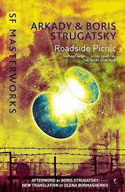

Biblioteca de Trantor
Biblioteca de Trantor|  | |
| Autor | Boris Strugatsky |
|---|---|
| País | União Soviética |
| Linguagem Original | Russo |
| Gênero | Ficção Científica |
| Data de publicação | 1972 |
Sobre o livro
Roadside Picnic, Piquenique na estrada ou Piquenique extraterrestre é um livro de ficção científica escrito pelos irmãos Arkadi e Boris Strugatsky em 1971 e publicado na União Soviética em 1977 (com o título russo Пикник на обочине - Piknik na obóchine). Ganhou várias traduções e foi exportada para mais de 20 países, sendo uma das obras da literatura soviética mais exportadas da história.
Originalmente foi publicada em entregas na revista russa Аврора (Avrora), porém sofreu várias censuras na União Soviética e apenas após o fim desta em 1990, a história completa foi publicada como livro, em uma versão fiel à escrita por seus criadores.
Sinopse
A obra tem como plano de fundo as chamadas "Visitações", visitas de seres alienígenas à Terra. O título do livro surge à partir da teoria de um dos cientistas apresentados no livro, que tais visitas teriam sido "acidentais", como se os alienígenas tivessem apenas parado em nosso planeta para descansar um pouco de sua viagem (como se fizessem um piquenique na beira de uma estrada). Durante esta parada, eles teriam esquecido alguns itens no local, os quais alterariam a natureza criando as chamadas "Zonas".
O livro diz existirem seis destas "Zonas" (todas elas isoladas e vigiadas por um Instituto internacional), porém se concentra em apenas uma, que se localizariam no Canadá, próximo a cidade fictícia de Harmont, onde vive o protagonista da história, Redrick Schuhart (chamdo simplesmente Red em boa parte da história), que é um stalker (termo que se usaria para designar as pessoas que entravam ilegalmente na Zona a fim de saquear objetos alienígenas e vendê-los em uma espécie de "mercado negro").
A história é dividida em quatro partes, que se mostram como histórias independentes, mas com os mesmos personagens, ordem cronológica e com elementos em seu enredo que as interligam:
Influências
Um filme inspirado pela obra foi feito por Andrei Tarkovski com o título de Stalker, embora o roteiro tenha muitas modificações ante a obra literária, mantendo apenas alguns diálogos e a ideia em plano de fundo de uma "Zona de Exclusão" com algo que poderia realizar desejos (no filme, um Quarto).
Nos anos 2000 foi feito uma série de games FPS, chamada S.T.A.L.K.E.R. inspirada tanto no livro quanto no filme de Tarkovski, que também reúne vários conceitos do livro.